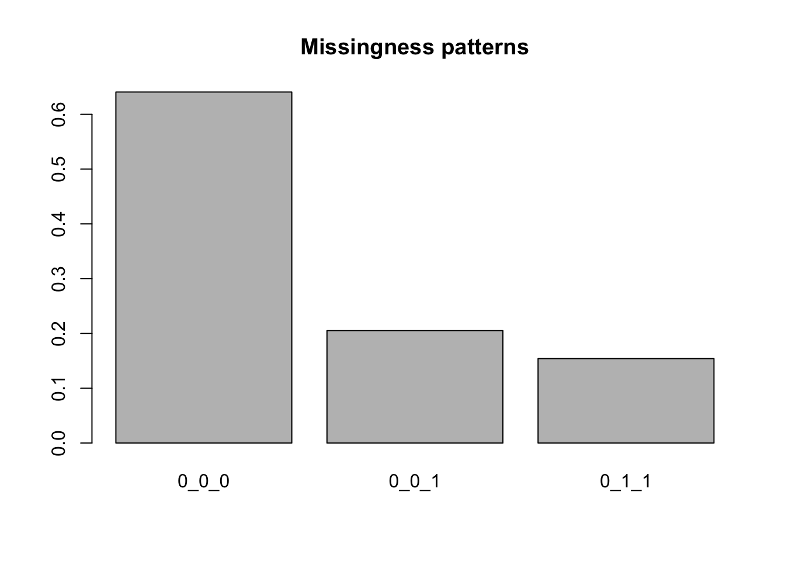

library(Surrogate)
data("Schizo_PANSS")HW 3
Question 1: EM for the PANSS data
Load the Surrogate package in R and load the dataset Schizo_PANSS:
The dataset combines five clinical trials aimed at determining if risperidone decreases the Positive and Negative Syndrome Score (PANSS) over time compared to a control treatment for patients with schizophrenia. These are longitudinal trials where patients are assessed at weeks 1, 2, 4, 6 and 8 after being assigned to a treatment arm.
Each row in the dataset is a different trial participant, and Week1, Week2, Week4, Week6, Week8 records the change in PANSS from baseline. The variable Treat represents whether the patient was enrolled in the control (-1) or if the patient was in the risperidone arm (1).
Subset the data to include only Week1, Week4 and Week8, and including only complete cases, dropouts between week 4 and week 8, and dropouts between weeks 1 and weeks 4.
hw_data <- Schizo_PANSS[,c("Id","Treat","Week1","Week4","Week8")] |>
subset((!is.na(Week1) & !is.na(Week4) & !is.na(Week8))
| (!is.na(Week1) & !is.na(Week4) & is.na(Week8))
| (!is.na(Week1) & is.na(Week4) & is.na(Week8)))Double-checking we did the subsetting correctly:
gen_miss_patterns <- function(mat) {
patterns <- mat |>
is.na() |>
apply(2,as.integer) |>
apply(1, \(row) {
paste(row,collapse = "_")
})
return(patterns)
}
y_data <- hw_data[,c("Week1","Week4","Week8")]
miss_patterns <- gen_miss_patterns(y_data)
tab_miss <- table(miss_patterns)
prop_miss <- prop.table(tab_miss)
prop_miss <- sort(prop_miss,decreasing = TRUE)
barplot(prop_miss, main = "Missingness patterns")
Of the remaining data, 20% of cases dropped out before the final week, and 15% of cases dropped out between weeks 1 and 4.
We’re going to fit the following model to this dataset:
\[ y_i \mid \text{Treat}_i \sim \text{Normal}(\mu + \beta_1 \text{Treat}_i + \beta_2 t + \beta_3 \text{Treat}_i t, \Sigma) \] where \(t\) is the vector \(1, 4, 8\) indicating at what time points the measurements were taken and \(\mu\) is a scalar mean, under the somewhat dubious assumption of ignorable dropout.
In order to do so, we can use an Expectation-Conditional-Maximization algorithm:
Initialize with \(\beta^{(1)}, \Sigma^{(1)}\), and a value \(\epsilon\)
For \(t = 1, 2, \dots\)
Compute \(\Exp{y_{i} \mid y_{i(0)}, \beta^{(t)}, \Sigma^{(t)}}\) and \(\Exp{y_{i}y_{i}^T \mid y_{i(0)}, \beta^{(t)}, \Sigma^{(t)}}\) for all \(i\)
Update \(\beta^{(t)}\) to \(\beta^{(t+1)}\)
\[ \beta^{(t+1)} = \lp \textstyle\sum_i X_i^T (\Sigma^{(t)})^{-1} X_i \rp^{-1} \textstyle \sum_i X_i^T (\Sigma^{(t)})^{-1} \Exp{y_i\mid y_{i(0)}, \beta^{(t)}, \Sigma^{(t)}} \]
- Update \(\Sigma^{(t)}\) to \(\Sigma^{(t+1)}\)
\[ \Sigma^{(t+1)} = \frac{1}{n} \textstyle\sum_i \Exp{(y_i - X_i \beta^{(t+1)})(y_i - X_i \beta^{(t+1)})^T \mid y_{i(0)}, \beta^{(t)}, \Sigma^{(t)}} \]
- If \(Q(\beta^{(t+1)}, \Sigma^{(t+1)} \mid \beta^{(t)}, \Sigma^{(t)}) - Q(\beta^{(t)}, \Sigma^{(t)} \mid \beta^{(t)}, \Sigma^{(t)}) < \epsilon\), stop, otherwise, return to step a.
Compute \(Q(\beta, \Sigma \mid \beta^{(t)}, \Sigma^{(t)})\) as: \[ -\frac{n}{2} \log \det \Sigma - \frac{1}{2} \text{tr}\lp\lp \sum_i\ExpA{(y_i - X_i \beta)(y_i - X_i \beta)^T}{y_{i(1)} \mid y_{i(0)}, \beta^t, \Sigma^t } \rp\Sigma^{-1}\rp \]
Part a
Fit your model to simulated data
set.seed(123)
n <- 1000
p <- 5
K <- 3
X <- list()
beta <- rnorm(p)
L <- matrix(rnorm(K * K),K,K)
Sigma <- L %*% t(L)
phi <- rnorm(p)
y <- list()
### d will hold our indicators for which group each patient is in.
### d = 1: dropout between weeks 1 and 4
### d = 2: dropout between weeks 4 and 8
### d = 3: all values are observed
d <- rep(NA_integer_,n)
for (i in 1:n) {
X[[i]] <- matrix(rnorm(p * K),K,p)
y[[i]] <- X[[i]] %*% beta + MASS::mvrnorm(mu = rep(0,K), Sigma = Sigma)
logit_p_m <- X[[i]] %*% phi + c(-2, -1, 1)
p_m <- exp(logit_p_m) / sum(exp(logit_p_m))
d_i <- rmultinom(1, 1, p_m)
d[i] <- which(as.logical(d_i))
y[[i]] <- y[[i]][1:d[i]]
}For this model, we will assume that even if you drop out, we still observe your covariates for all time points.
Use the expressions from lecture 11’s notes to derive asymptotic standard errors from the observed information for the observed data for your estimates for beta.
This is fairly involved, so let’s work through the terms we’ll need for the standard errors. \[ \begin{aligned} & I(\theta^\star \mid Y_{(0)} = \tilde{y}_{(0)}) = \, -\nabla^2_\theta Q(\theta \mid \theta^\star)\mid_{\theta = \theta^\star} \\ &-\ExpA{\nabla_\theta \ell_Y(\theta \mid Y_{(1)} = y_{(1)}, Y_{(0)} = \tilde{y}_{(0)})\nabla_\theta \ell_Y(\theta \mid Y_{(1)} = y_{(1)}, Y_{(0)} = \tilde{y}_{(0)})^T}{Y_{(1)} \mid Y_{(0)}=\tilde{y}_{(0)}}\mid_{\theta = \theta^\star} \end{aligned} \] Both terms can be simplified for our model because we’re assuming independence between observations. When we have independence the expression changes to \[ \begin{align} & I(\theta^\star \mid Y_{(0)} = \tilde{y}_{(0)}) = \, -\textstyle\sum_i \left(\ExpA{\nabla^2_\theta\ell_Y(\theta \mid Y_{i(1)} = y_{i(1)}, Y_{i(0)} = \tilde{y}_{i(0)})}{Y_{i(1)} \mid Y_{i(0)}=\tilde{y}_{i(0)}, \theta^\star}\right) \mid_{\theta = \theta^\star} \tag{A}\\ &-\textstyle\sum_i \left(\ExpA{\nabla_\theta \ell_Y(\theta \mid Y_{i(1)} = y_{i(1)}, Y_{i(0)} = \tilde{y}_{i(0)})\nabla_\theta \ell_Y(\theta \mid Y_{i(1)} = y_{i(1)}, Y_{i(0)} = \tilde{y}_{i(0)})^T}{Y_{i(1)} \mid Y_{i(0)}=\tilde{y}_{i(0)}, \theta^\star}\right)\mid_{\theta = \theta^\star}\tag{B}\\ &-\textstyle\sum_{i\neq j} \ExpA{\nabla_\theta \ell_Y(\theta \mid Y_{i(1)} = y_{i(1)}, Y_{i(0)} = \tilde{y}_{i(0)})}{Y_{i(1)} \mid Y_{i(0)}=\tilde{y}_{i(0)}, \theta^\star}\mid_{\theta = \theta^\star}\\ & \quad \times \ExpA{\nabla_\theta \ell_Y(\theta \mid Y_{j(1)} = y_{j(1)}, Y_{j(0)} = \tilde{y}_{j(0)})^T}{Y_{j(1)} \mid Y_{j(0)}=\tilde{y}_{j(0)}, \theta^\star}\mid_{\theta = \theta^\star}^T\tag{C} \end{align} \]
This means we’ll need three quantities to evaluate this expression: \((A)\) the expected hessian of the complete data, \((B)\), the expected outer product of the score for each observation \(i\) of the complete data likelihood, and \((C)\), the cross terms for \(i \neq j\) of the expected complete data scores.
Let’s start with the score function of the complete data log-likelihood, or the second expression above. We know that \(\ell_Y(\beta, \Sigma \mid Y_{i(1)} = y_{i(1)}, Y_{i(0)} = \tilde{y}_{i(0)})\) is: \[ -\frac{1}{2} \log \det \Sigma - \frac{1}{2}\text{tr}\left((y_i - X_i \beta)(y_i - X_i \beta)^T\Sigma^{-1}\right) \]
An aside on differentials
We’ll need the differential of \(\ell_Y\). Note that this isn’t the gradient, although the differential involves gradients. The differential of \(\ell_Y\) is a scalar quantity that measures how much \(\ell_Y\) changes for small changes in all of the arguments to \(\ell_Y\). In our case, \(\ell_Y\) is a function of \(\beta\) and \(\Sigma\).
We write \(\mathrm{d} \ell_Y\) as the differential of \(\ell_Y\), and it is related to the gradients of \(\ell_Y\) with respect to \(\beta\) and \(\Sigma\) as: \[ \mathrm{d}\ell_Y(\beta, \Sigma \mid Y) = \frac{\partial \ell_Y(\beta, \Sigma \mid Y)}{\partial \beta^T} \mathrm{d} \beta + \frac{\partial \ell_Y(\beta, \Sigma \mid Y)}{\partial \text{vec}(\Sigma)^T} \mathrm{d} \text{vec}(\Sigma) \] where \(\frac{\partial \ell_Y(\beta, \Sigma \mid Y)}{\partial \beta^T}\) is a \(1 \times p\) vector and \(\frac{\partial \ell_Y(\beta, \Sigma \mid Y)}{\partial \text{vec}(\Sigma)^T}\) is a \(1 \times d^2\) vector. Each element of \(\frac{\partial \ell_Y(\beta, \Sigma \mid Y)}{\partial \beta^T}\) is the partial derivative of \(\ell_Y(\beta, \Sigma \mid Y)\) with respect to one of the \(\beta\) coefficients, while an element of \(\frac{\partial \ell_Y(\beta, \Sigma \mid Y)}{\partial \text{vec}(\Sigma)^T}\) is the partial derivative of \(\ell_Y(\beta, \Sigma \mid Y)\) with respect to one element of \(\Sigma\). These elements are ordered as \(\text{vec}(\Sigma)\), which is an operation that takes an \(n\times p\) matrix and generates a length \(np\) vector by repeatedly concatenating the columns the matrix into a single vector. In , the function when applied to a matrix is the \(\text{vec}\) operation.
Defining gradients as vectors makes it easy to keep track of the dimensions of gradients with respect to matrices. If we wanted to use the matrix of partial derivatives of \(\ell_Y\) with respect to \(\Sigma\) in the expression above, we could instead have written the term: \[ \frac{\partial \ell_Y(\beta, \Sigma \mid Y)}{\partial \text{vec}(\Sigma)^T} \mathrm{d} \text{vec}(\Sigma) = \text{tr}\left(\frac{\partial \ell_Y(\beta, \Sigma \mid Y)}{\partial \Sigma} \mathrm{d}\Sigma^T\right) \] The variables \(\mathrm{d}\text{vec}(\Sigma)\) represent small deviations in the variables indicated. So \(\mathrm{d}\beta\) is a vector of small deviations in \(\beta\).
You can think of the study of differntials as being related to a one-term Taylor expansion of a function \(f\) at a point \(x + c\) about a point \(c\). In univariate terms: \[ f(x + c) = f(c) + f^\prime(c) (x - c) + o(\abs{x - c}) \] In this case, \(\mathrm{d} x = x - c\). Thus, you can think of the differential as being the linear term in the Taylor expansion, namely \(f^\prime(c) \mathrm{d}x\). If you can compute a differential of a function and isolate vectors \(A_\beta\) and \(A_{\text{vec}(\Sigma)}\) such that: \[ \mathrm{d} \ell_Y(\beta, \Sigma \mid Y) = A_\beta^T \mathrm{d}\beta + A_{\text{vec}(\Sigma)}^T \mathrm{d}\text{vec}(\Sigma) \] then you can equate \(A_\beta^T\) with \(\frac{\partial \ell_Y(\beta, \Sigma \mid Y)}{\partial \beta^T}\) and \(A_{\text{vec}(\Sigma)}^T\) with \(\frac{\partial \ell_Y(\beta, \Sigma \mid Y)}{\partial \text{vec}(\Sigma)^T}\).
The game for using differentials for matrix calculus is to use the rules of differentials, which mirror the rules for derivatives, and are thus fairly easy to use, and to isolate terms to the left of \(\mathrm{d}\beta\) and \(\mathrm{d}\text{vec}(\Sigma)\), and then these will be your gradients.
The two rules for differentials that we will come back to over and over again are the product rule \[ \mathrm{d}(AB) = \mathrm{d}(A) B + A \mathrm{d}(B) \] and the fact that \(\mathrm{d}f(c) = 0\) when \(c\) is not a variable in our set of variables of interest. This means, for instance, that when computing \(\mathrm{d}\ell_Y(\beta, \Sigma \mid Y)\), any differentials of observations, \(y_i\) are zero.
The idea with second differentials is similar but one tries to isolate matrices \(B_\beta, B_{\text{vec}(\Sigma)}\), and \(B_{\beta,\text{vec}(\Sigma)}\) by applying the differential again to the first differential that gives something like: \[ \mathrm{d}^2 \ell_Y(\beta, \Sigma \mid Y) = \mathrm{d}\beta^T B_\beta \mathrm{d}\beta + \mathrm{d}\text{vec}(\Sigma)^T B_{\text{vec}(\Sigma)} \mathrm{d}\text{vec}(\Sigma) + 2 \mathrm{d}\beta^T B_{\beta,\text{vec}(\Sigma)} \mathrm{d}\text{vec}(\Sigma) \] In this case, the Hessian of \(\ell_Y(\beta, \Sigma \mid Y)\) has the form: \[ \begin{bmatrix} B_\beta & B_{\beta,\text{vec}(\Sigma)} \\ B_{\beta,\text{vec}(\Sigma)}^T & B_{\text{vec}(\Sigma)} \end{bmatrix} \]
This can motivated from a two term Taylor expansion for a function \(f\) at \(x + c\) about the point \(c\).
Finding the first differential of the \(\ell_Y\)
Starting with the likelihood: \[ \begin{aligned} & \mathrm{d}\lp-\frac{1}{2} \log \det \Sigma - \frac{1}{2}\text{tr}\left( (y_i - X_i \beta)(y_i - X_i \beta)^T \Sigma^{-1}\right)\rp \\ & = -\frac{1}{2} \mathrm{d} \log \det \Sigma - \mathrm{d} \left(\frac{1}{2}\text{tr}\left((y_i - X_i \beta)(y_i - X_i \beta)^T \Sigma^{-1}\right) \right) \\ & = -\frac{1}{2} \mathrm{d} \log \det \Sigma - \frac{1}{2}\text{tr}\left(\mathrm{d} \left((y_i - X_i \beta)(y_i - X_i \beta)^T\right)\Sigma^{-1}\right) \\ &\quad - \frac{1}{2}\text{tr}\left((y_i - X_i \beta)(y_i - X_i \beta)^T \right)\mathrm{d} \left(\Sigma^{-1}\right) \end{aligned} \]
From lecture 3, we have \[ \mathrm{d} \log \det \Sigma = \text{tr}(\Sigma^{-1} \mathrm{d}\Sigma) \]
Applying this rule and applying the product rule again to the term \(\mathrm{d} \left((y_i - X_i \beta)(y_i - X_i \beta)^T\right)\) gives: \[ \begin{aligned} \mathrm{d} \ell_Y(\beta, \Sigma \mid Y) = &-\frac{1}{2}\text{tr}(\Sigma^{-1} \mathrm{d}\Sigma) + \frac{1}{2}\text{tr}\left((X_i\mathrm{d} \beta)(y_i - X_i \beta)^T\Sigma^{-1}\right)\\ & + \frac{1}{2}\text{tr}\left((y_i - X_i\beta)(X_i \mathrm{d} \beta)^T\Sigma^{-1}\right) - \frac{1}{2}\text{tr}\left((y_i - X_i\beta)(y_i - X_i \beta)^T\mathrm{d} \Sigma^{-1}\right) \end{aligned} \] We will repeatedly use the fact that \[ \text{tr}(AB) = \text{tr}(BA), \, \text{tr}(A) = \text{tr}(A^T),\,\text{tr}(A + B) = \text{tr}(A) + \text{tr}(B) \] This implies that for \(B = B^T\): \[ \begin{aligned} \text{tr}(A^T B) & = \text{tr}((B^T A)^T)\\ & = \text{tr}(B^T A)\\ & = \text{tr}(A B^T) \\ & = \text{tr}(A B) \end{aligned} \] We then get \[ \begin{aligned} \mathrm{d} \ell_Y(\beta, \Sigma \mid Y) = &-\frac{1}{2}\text{tr}(\Sigma^{-1} \mathrm{d}\Sigma) + \text{tr}\left( (y_i - X_i\beta)(X_i \mathrm{d} \beta)^T\Sigma^{-1}\right)\\ & - \frac{1}{2}\text{tr}\left((y_i - X_i\beta)(y_i - X_i \beta)^T\mathrm{d} \Sigma^{-1}\right) \end{aligned} \] We can further simplify the middle term: \[ \begin{aligned} \text{tr}\left( (y_i - X_i\beta)(X_i \mathrm{d} \beta)^T\Sigma^{-1}\right) & = \text{tr}\left( (y_i - X_i\beta)\mathrm{d} \beta^T X_i^T \Sigma^{-1}\right) \\ & = \text{tr}\left( X_i^T \Sigma^{-1}(y_i - X_i\beta)\mathrm{d} \beta^T \right) \end{aligned} \] And we also have that \(\mathrm{d}\Sigma^{-1} = \Sigma^{-1}(\mathrm{d}\Sigma)\Sigma^{-1}\), so the full first differential is: \[ \begin{aligned} \mathrm{d} \ell_Y(\beta, \Sigma \mid Y) = &-\frac{1}{2}\text{tr}(\Sigma^{-1} \mathrm{d}\Sigma) + \text{tr}\left( X_i^T\Sigma^{-1}(y_i - X_i\beta) \mathrm{d} \beta^T \right) \\ &- \frac{1}{2}\text{tr}\left((y_i - X_i\beta)(y_i - X_i \beta)^T\Sigma^{-1}(\mathrm{d} \Sigma)\Sigma^{-1}\right) \end{aligned} \] We can also combine the first and third terms:
\[ \begin{aligned} -\frac{1}{2}\text{tr}(&\Sigma^{-1} \mathrm{d}\Sigma) - \frac{1}{2}\text{tr}\left((y_i - X_i\beta)(y_i - X_i \beta)^T \Sigma^{-1}(\mathrm{d} \Sigma)\Sigma^{-1}\right) \\ & = -\frac{1}{2}\text{tr}(\Sigma^{-1} \mathrm{d}\Sigma) - \frac{1}{2}\text{tr}\left(\Sigma^{-1}(\mathrm{d} \Sigma)\Sigma^{-1}(y_i - X_i\beta)(y_i - X_i \beta)^T\right) \\ & = -\frac{1}{2}\text{tr}\left(\Sigma^{-1} \mathrm{d}\Sigma\Sigma^{-1}\left(\Sigma - (y_i - X_i\beta)(y_i - X_i \beta)^T \right)\right) \\ \end{aligned} \] This leads to a final first differential of \(\ell_Y\): \[ \begin{aligned} \mathrm{d} \ell_Y(\beta, \Sigma \mid Y) & = -\frac{1}{2}\text{tr}\left(\mathrm{d}\Sigma\Sigma^{-1}\left(\Sigma - (y_i - X_i\beta)(y_i - X_i \beta)^T\right)\Sigma^{-1} \right)\\ & + \text{tr}\left(X_i^T\Sigma^{-1}(y_i - X_i\beta)\mathrm{d} \beta^T \right) \end{aligned} \] Applying our rules from above for finding gradients from expressions for differentials, we can see that there is a term for \(\mathrm{d}\beta\) and a term for \(\mathrm{d}\Sigma\).
Rearranging our expression gives: \[ \begin{aligned} \mathrm{d} \ell_Y(\beta, \Sigma \mid Y) & = -\frac{1}{2}\text{vec}\left(\Sigma^{-1}\left(\Sigma - (y_i - X_i\beta)(y_i - X_i \beta)^T\right)\Sigma^{-1}\right)^T \mathrm{d} \text{vec}(\Sigma)\\ & + \left(X_i^T\Sigma^{-1}(y_i - X_i\beta)\right)^T \mathrm{d} \beta \end{aligned} \]
Thus, for a single observation, the gradient with respect to \(\beta\) is:
\[ \begin{aligned} X_i^T\Sigma^{-1}(y_i - X_i\beta) \end{aligned} \] and the gradient with respect to \(\text{vec}(\Sigma)\) is: \[ -\frac{1}{2}\text{vec}\left(\Sigma^{-1}\left(\Sigma - (y_i - X_i\beta)(y_i - X_i \beta)^T\right)\Sigma^{-1} \right) \]
We’ll also need the expected values of these gradients:
\[ \begin{aligned} \ExpA{X_i^T\Sigma^{-1}(y_i - X_i\beta)}{Y_{i(1)} \mid Y_{i(0)}, \beta^\star, \Sigma^\star} = X_i^T\Sigma^{-1}(\ExpA{y_i}{Y_{i(1)} \mid Y_{i(0)}, \beta^\star, \Sigma^\star} - X_i\beta) \end{aligned} \] To make the following expressions more compact, we’ll define the conditional expectation of the outer product of the regression errors, \(C(y_i, X_i, \beta, \Sigma \mid \beta^t, \Sigma^t)\), evaluated at \(\beta, \Sigma\) with respect to the conditional distribution at \(\beta^t, \Sigma^t\):
\[ \begin{aligned} C(y_i, X_i, \beta, \Sigma \mid \beta^t, \Sigma^t) = & \bigg(\text{Cov}_{y_{i(1)} \mid y_{i(0)}, \beta^t, \Sigma^t}(y_i) \\ &\quad + (\ExpA{y_i}{y_{i(1)} \mid y_{i(0)}, \beta^t, \Sigma^t} - X_i \beta)(\ExpA{y_i}{y_{i(1)} \mid y_{i(0)}, \beta^t, \Sigma^t} - X_i \beta)^T\bigg) \end{aligned} \]
Then we can write the expected gradient with respect \(\text{vec}(\Sigma)\) as \[ \begin{aligned} & -\frac{1}{2}\text{vec}\left(\Sigma^{-1}\left(\Sigma - \ExpA{(y_i - X_i\beta)(y_i - X_i \beta)^T}{Y_{i(1)} \mid Y_{i(0)}, \beta^\star, \Sigma^\star}\right)\Sigma^{-1} \right) = \\ & -\frac{1}{2}\text{vec}\left(\Sigma^{-1}\left(\Sigma - C(y_i, X_i, \beta, \Sigma \mid \beta^\star, \Sigma^\star)\right)\Sigma^{-1} \right) \end{aligned} \]
Now we need to compute the following matrices: \[ \begin{bmatrix} I^{ii}_{\beta\beta} & I^{ii}_{\beta\Sigma} \\ (I^{ii}_{\beta\Sigma})^T & I^{ii}_{\Sigma\Sigma} \end{bmatrix},\, \begin{bmatrix} I^{ij}_{\beta\beta} & I^{ij}_{\beta\Sigma} \\ (I^{ij}_{\beta\Sigma})^T & I^{ij}_{\Sigma\Sigma} \end{bmatrix} \] Where the \(ii\) superscript matrices represent the expected cross product of the score for the \(i^\mathrm{th}\) unit, while the \(ij\) represents the cross product of the expected scores for the \(i^\mathrm{th}\) and \(j^\mathrm{th}\) units.
Let’s address \(I^{ii}_{\beta, \beta}\) first:
\[ \begin{aligned} I^{ii}_{\beta\beta} & = \ExpA{\left(X_i^T\Sigma^{-1}(y_i - X_i\beta)\right)\left(X_i^T\Sigma^{-1}(y_i - X_i\beta)\right)^T}{Y_{(1)} \mid Y_{(0)}, \beta^\star, \Sigma^\star} \\ & = X_i^T\Sigma^{-1}\ExpA{(y_i - X_i\beta)(y_i - X_i\beta)^T}{Y_{(1)} \mid Y_{(0)}, \beta^\star, \Sigma^\star} \Sigma^{-1}X_i \\ & = X_i^T(\Sigma^\star)^{-1}C(y_i, X_i,\beta^\star, \Sigma^\star \mid \beta^\star, \Sigma^\star) (\Sigma^\star)^{-1}X_i \end{aligned} \] \[ I^{ij}_{\beta\beta} = X_i^T\Sigma^{-1}(\ExpA{y_i}{Y_{i(1)} \mid Y_{i(0)}, \beta^\star, \Sigma^\star} - X_i\beta)(\ExpA{y_j}{Y_{j(1)} \mid Y_{j(0)}, \beta^\star, \Sigma^\star} - X_j\beta)^T\Sigma^{-1} X_j \]
\[ I^{ii}_{\beta\Sigma} = \ExpA{-\frac{1}{2}\left(X_i^T\Sigma^{-1}(y_i - X_i\beta)\right)\text{vec}\left(\Sigma^{-1}\left(\Sigma - \left((y_i - X_i\beta)(y_i - X_i \beta)^T \right)\right)\Sigma^{-1} \right)^T}{Y_{(1)} \mid Y_{(0)}, \beta^\star, \Sigma^\star} \] has two terms: \[ \ExpA{-\frac{1}{2}\left(X_i^T\Sigma^{-1}(y_i - X_i\beta)\right)\text{vec}(I_d)}{Y_{(1)} \mid Y_{(0)}, \beta^\star, \Sigma^\star} \] This expression will zero out when summed across the entire dataset because we evaluate this expression at \(\beta^\star\): \[ \ExpA{-\frac{1}{2}\textstyle\sum_i \left(X_i^T\Sigma^{-1}(y_i - X_i\beta^\star)\right)\text{vec}(I_d)}{Y_{(1)} \mid Y_{(0)}, \beta^\star, \Sigma^\star} = 0 \] because \(\beta^\star\) solves the score equation for the entire dataset.
The second expression doesn’t drop out: \[ \ExpA{\frac{1}{2}X_i^T\Sigma^{-1}(y_i - X_i\beta)\text{vec}\left(\Sigma^{-1}\left((y_i - X_i\beta)(y_i - X_i \beta)^T \right)\Sigma^{-1} \right)^T}{Y_{(1)} \mid Y_{(0)}, \beta^\star, \Sigma^\star} \] This can be simplified using the identity:
\[ \text{vec}(A B C) = (C^T \otimes A) \text{vec}(B) \] which leads to: \[ I^{ii}_{\beta\Sigma} = \frac{1}{2}X_i^T\Sigma^{-1}\ExpA{(y_i - X_i\beta)\text{vec}\left((y_i - X_i\beta)(y_i - X_i \beta)^T \right)^T }{Y_{(1)} \mid Y_{(0)}, \beta^\star, \Sigma^\star}\Sigma^{-1} \otimes \Sigma^{-1} \] while the \(I^{ij}_{\beta\Sigma}\) matrix is: \[ \begin{aligned} I^{ij}_{\beta\Sigma} & = X_i^T\Sigma^{-1}(\ExpA{y_i}{Y_{i(1)} \mid Y_{i(0)}, \beta^\star, \Sigma^\star} - X_i\beta) \\ & \times-\frac{1}{2}\text{vec}\left(\Sigma^{-1}\left(\Sigma - C(y_j, X_j, \beta, \Sigma \mid \beta^\star, \Sigma^\star)\right)\Sigma^{-1} \right)^T \end{aligned} \]
The block matrix on the lower diagonal is: \[ \begin{aligned} I_{\Sigma\Sigma} = & \mathbb{E}_{Y_{(1)} \mid Y_{(0)}, \beta^\star, \Sigma^\star}\Bigg[\frac{1}{4}\text{vec}\left(\Sigma^{-1}\left(\Sigma - \left((y_i - X_i\beta)(y_i - X_i \beta)^T \right)\right)\Sigma^{-1} \right)\\ & \times \text{vec}\left(\Sigma^{-1}\left(\Sigma - \left((y_i - X_i\beta)(y_i - X_i \beta)^T \right)\right)\Sigma^{-1} \right)^T\Bigg] \end{aligned} \] This simplifies after summing across the \(n\) samples because the points \(\beta^\star\) and \(\Sigma^\star\) solve the following equation: \[ \ExpA{n\Sigma^\star - \textstyle\sum_i(y_i - X_i\beta^\star)(y_i - X_i \beta^\star)^T}{Y_{(1)} \mid Y_{(0)}, \beta^\star, \Sigma^\star} = 0 \] This leaves two terms, the first of which is: \[ \begin{aligned} & \frac{1}{4}\text{vec}\left(\Sigma^{-1}(y_i - X_i\beta)(y_i - X_i \beta)^T \Sigma^{-1} \right) \text{vec}\left(\Sigma^{-1}(y_i - X_i\beta)(y_i - X_i \beta)^T\Sigma^{-1} \right)^T \end{aligned} \] and the second of which is: \[ \frac{1}{4}\text{vec}(I_d)\text{vec}(I_d)^T \] This gives \[ \begin{aligned} I_{\Sigma\Sigma} = \frac{1}{4}(\Sigma^\star)^{-1} \otimes (\Sigma^\star)^{-1} D (\Sigma^\star)^{-1} \otimes (\Sigma^\star)^{-1} + \frac{1}{4}\text{vec}(I_d)\text{vec}(I_d)^T \end{aligned} \]
where \(D\) is: \[ D = \ExpA{\text{vec}((y_i - X_i\beta^\star)(y_i - X_i \beta^\star)^T)\text{vec}((y_i - X_i\beta^\star)(y_i - X_i \beta^\star)^T)^T}{Y_{(1)} \mid Y_{(0)}, \beta^{\star}, \Sigma^\star} \] Finally, the matrix \[ \begin{aligned} I^{ij}_{\Sigma\Sigma} & =\frac{1}{4}\text{vec}\left(\Sigma^{-1}\left(\Sigma - C(y_i, X_i, \beta, \Sigma \mid \beta^\star, \Sigma^\star)\right)\Sigma^{-1} \right)\text{vec}\left(\Sigma^{-1}\left(\Sigma - C(y_j, X_j, \beta, \Sigma \mid \beta^\star, \Sigma^\star)\right)\Sigma^{-1} \right)^T \end{aligned} \]
Final expression for score of \(\beta\)
Given that we will have third and fourth moments of multivariate Gaussians, I’m going to say that we’ll approximate the standard error by assuming that \(\sum_{i} I^{ii}_{\beta\Sigma} = \sum_{i\neq j} I^{ij}_{\beta\Sigma} = 0\) (which is not right!), which would allow us to ignore lower block diagonals involving higher order moments for the multivariate Gaussian.
\[ \begin{aligned} \sum_i I^{ii}_{\beta\beta} &+ \sum_{i\neq j} I^{ij}_{\beta\beta} = \sum_i X_i^T(\Sigma^\star)^{-1} C(y_i, X_i, \beta^\star, \Sigma^\star \mid \beta^\star, \Sigma^\star) (\Sigma^\star)^{-1}X_i \\ & + \sum_{i\neq j} X_i^T\Sigma^{-1}(\ExpA{y_i}{Y_{i(1)} \mid Y_{i(0)}, \beta^\star, \Sigma^\star} - X_i\beta)(\ExpA{y_j}{Y_{j(1)} \mid Y_{j(0)}, \beta^\star, \Sigma^\star} - X_j\beta)^T\Sigma^{-1} X_j \end{aligned} \]
Expression for Hessian
On to the expression for the second derivative of \(Q(\theta \mid \theta^\star) \mid_{\theta = \theta^\star}\). We start with an expression for the first differential from above: \[ \begin{aligned} -\frac{1}{2}\text{tr}\left(\mathrm{d}\Sigma\Sigma^{-1}\left(n \Sigma - \left(\sum_i (y_i - X_i\beta)(y_i - X_i \beta)^T \right)\right)\Sigma^{-1} \right) + \text{tr}\left(\left(\sum_i X_i^T\Sigma^{-1}(y_i - X_i\beta)\right) \mathrm{d} \beta^T \right) \end{aligned} \] Now we take the second derivatives: \[ \begin{aligned} & -\frac{1}{2}\text{tr}\left(\mathrm{d}\Sigma\mathrm{d}\Sigma^{-1}\left(n \Sigma - \left(\sum_i (y_i - X_i\beta)(y_i - X_i \beta)^T \right)\right)\Sigma^{-1} \right) \\ & -\frac{1}{2}\text{tr}\left(\mathrm{d}\Sigma\Sigma^{-1}\left(n \mathrm{d}\Sigma - \mathrm{d}\left(\sum_i (y_i - X_i\beta)(y_i - X_i \beta)^T \right)\right)\Sigma^{-1} \right) \\ & -\frac{1}{2}\text{tr}\left(\mathrm{d}\Sigma\Sigma^{-1}\left(n \Sigma - \left(\sum_i (y_i - X_i\beta)(y_i - X_i \beta)^T \right)\right)\mathrm{d}\Sigma^{-1} \right) \\ & + \text{tr}\left(\left(\sum_i X_i^T\mathrm{d}\Sigma^{-1}(y_i - X_i\beta)\right) \mathrm{d} \beta^T \right)\\ & - \text{tr}\left(\left(\sum_i X_i^T\Sigma^{-1}X_i\mathrm{d}\beta\right) \mathrm{d} \beta^T \right)\\ \end{aligned} \] Before we evaluate these, we can see the first and third expressions will be zero because the first order conditions at which we’re evaluating \(Q\) will solve: \[ n \Sigma^\star - \sum_i (y_i - X_i\beta^\star)(y_i - X_i \beta^\star)^T = 0 \] The second expression will become: \[ -\frac{1}{2}\text{tr}\left(\mathrm{d}\Sigma\Sigma^{-1}\left(n \mathrm{d}\Sigma + 2\left(\sum_i (y_i - X_i\beta) \mathrm{d}\beta^T X_i^T \right)\right)\Sigma^{-1} \right) \] which simplifies to \[ -\frac{n}{2}\text{tr}\left(\mathrm{d}\Sigma\Sigma^{-1}\mathrm{d}\Sigma \right) - \text{tr}\left(\sum_i X_i^T \Sigma^{-1}\mathrm{d}\Sigma\Sigma^{-1}(y_i - X_i\beta) \mathrm{d}\beta^T \right) \]
The fourth line of the second derivative is: \[ \text{tr}\left(\left(\sum_i X_i^T\Sigma^{-1}\mathrm{d}\Sigma\Sigma^{-1}(y_i - X_i\beta)\right) \mathrm{d} \beta^T \right) \] which cancels with the second term above.
We’re left with the following:
\[ \begin{aligned} &-\frac{n}{2}\text{tr}\left(\mathrm{d}\Sigma\Sigma^{-1}\mathrm{d}\Sigma \Sigma^{-1}\right) - \text{tr}\left(\mathrm{d} \beta^T \left(\sum_i X_i^T\Sigma^{-1}X_i\right)\mathrm{d}\beta \right)\\ \end{aligned} \] Thus, the Hessian of the \(Q\) function evaluated at \(\Sigma^\star, \beta^\star\) is
\[ \begin{bmatrix} -\sum_i X_i^T (\Sigma^\star)^{-1} X_i & 0 \\ 0 & -\frac{n}{2} (\Sigma^\star)^{-1} \otimes (\Sigma^\star)^{-1} \end{bmatrix} \]
TL;DR: Final expression for observed information of \(\beta\)
Assuming that \(I_{\beta,\Sigma} = 0\), which again is not right, but we’ve hit an impasse at the higher-order moments of multivariate Gaussians, we’re left with the final expression for the observed information of \(\beta\):
\[ \begin{aligned} & \sum_i X_i^T (\Sigma^\star)^{-1} X_i \\ & -\sum_i X_i^T(\Sigma^\star)^{-1}\text{Cov}_{y_{i(1)} \mid y_{i(0)}, \beta^{\star}, \Sigma^\star}(y_i)(\Sigma^\star)^{-1}X_i \\ &-\sum_i X_i^T(\Sigma^\star)^{-1} C(y_i, X_i, \beta^\star, \Sigma^\star \mid \beta^\star, \Sigma^\star) (\Sigma^\star)^{-1}X_i \\ & -\sum_{i\neq j} X_i^T(\Sigma^\star)^{-1}(\ExpA{y_i}{Y_{i(1)} \mid Y_{i(0)}, \beta^\star, \Sigma^\star} - X_i\beta^\star)(\ExpA{y_j}{Y_{j(1)} \mid Y_{j(0)}, \beta^\star, \Sigma^\star} - X_j\beta^\star)^T(\Sigma^\star)^{-1} X_j, \end{aligned} \] where \[ \begin{aligned} C(y_i, X_i, \beta^\star, \Sigma^\star \mid \beta^\star, \Sigma^\star) = & \bigg(\text{Cov}_{y_{i(1)} \mid y_{i(0)}, \beta^\star, \Sigma^\star}(y_i) \\ &\quad + (\ExpA{y_i}{y_{i(1)} \mid y_{i(0)}, \beta^\star, \Sigma^\star} - X_i \beta^\star)(\ExpA{y_i}{y_{i(1)} \mid y_{i(0)}, \beta^\star, \Sigma^\star} - X_i \beta^\star)^T\bigg) \end{aligned} \]
Compute marginal asymptotic confidence intervals for each element of beta and test whether the true values lie in those intervals.
Report how many steps it took for your model to converge.
Part b
Now fit your model to the real data, report the MLEs and the standard errors for your \(\beta\) coefficients.
Part c
Compare the inferences you get from EM for \(\beta\) to the inferences you got from the complete case analysis you performed on HW 2. Do the point estimates from the first HW for \(\beta\) fall in the asymptotic 95% confidence intervals we get from the EM algorithm?